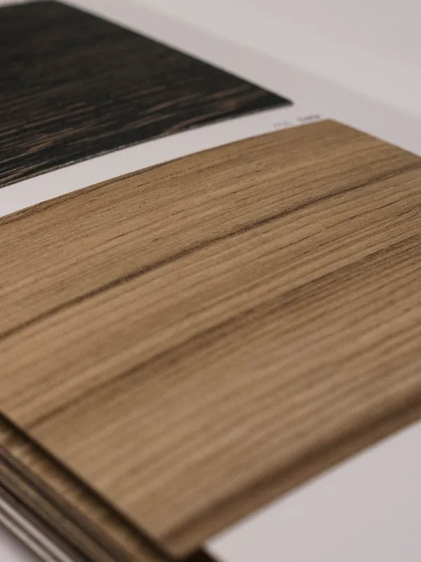
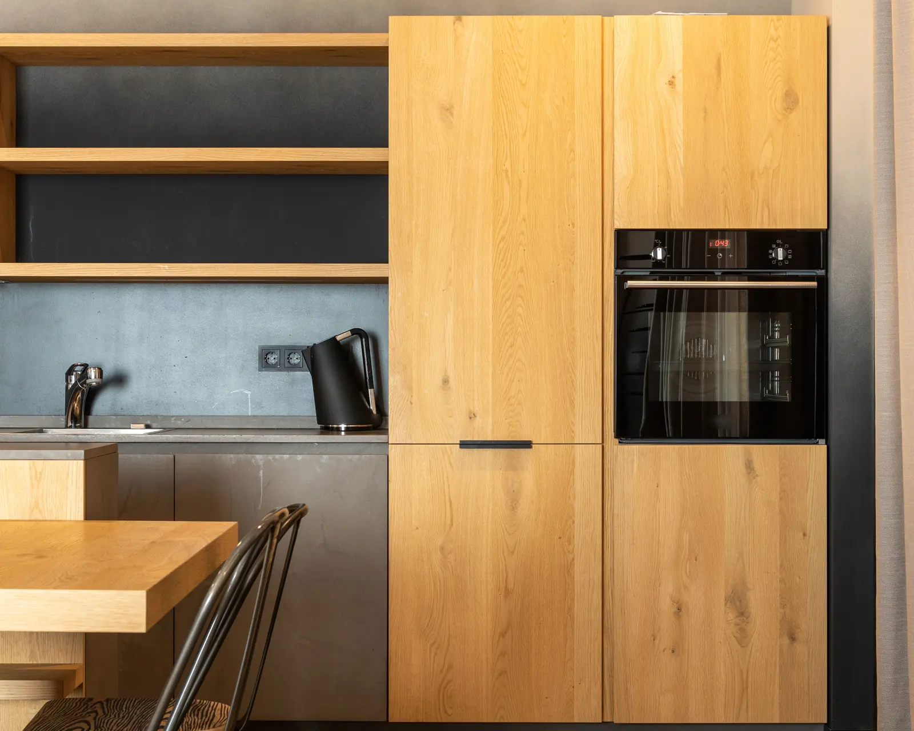
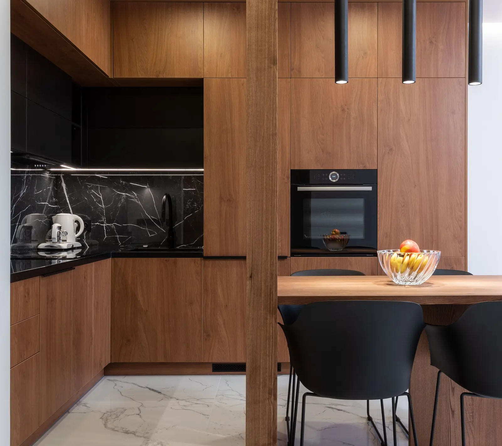
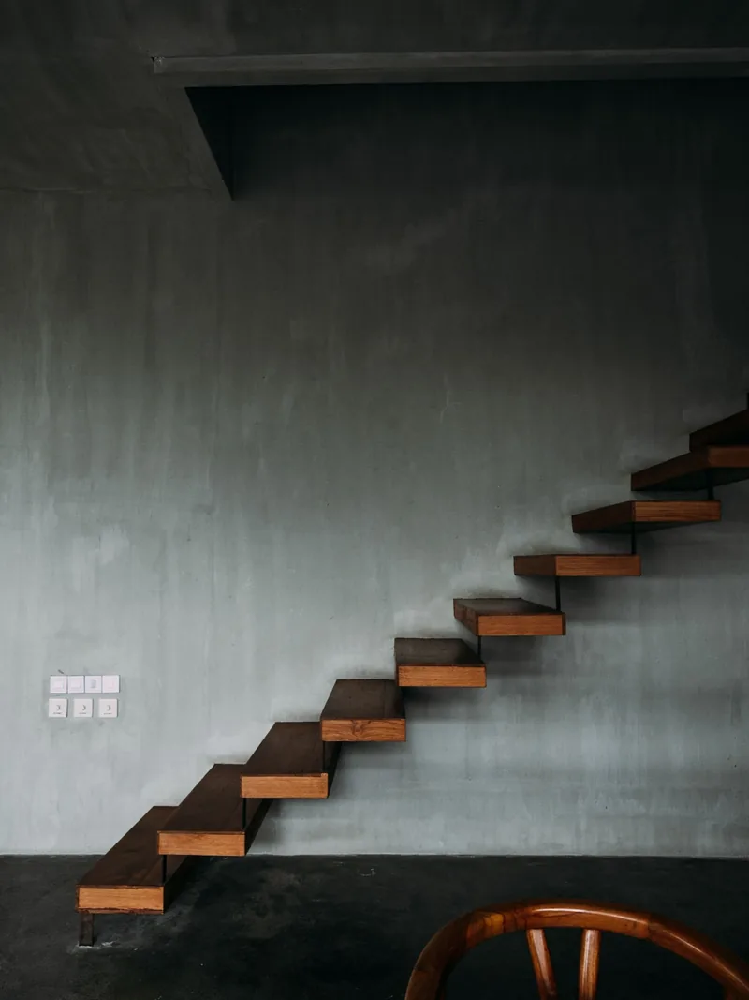
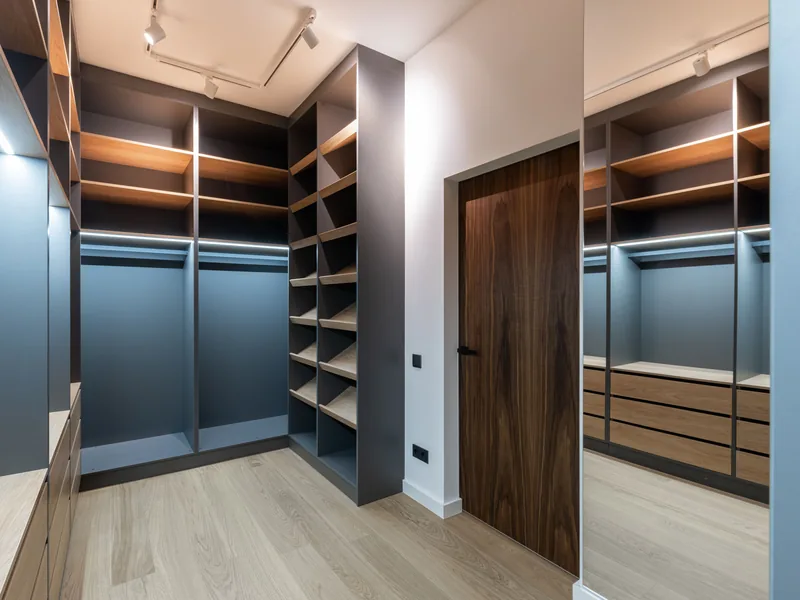
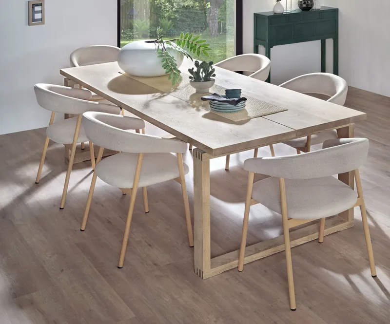
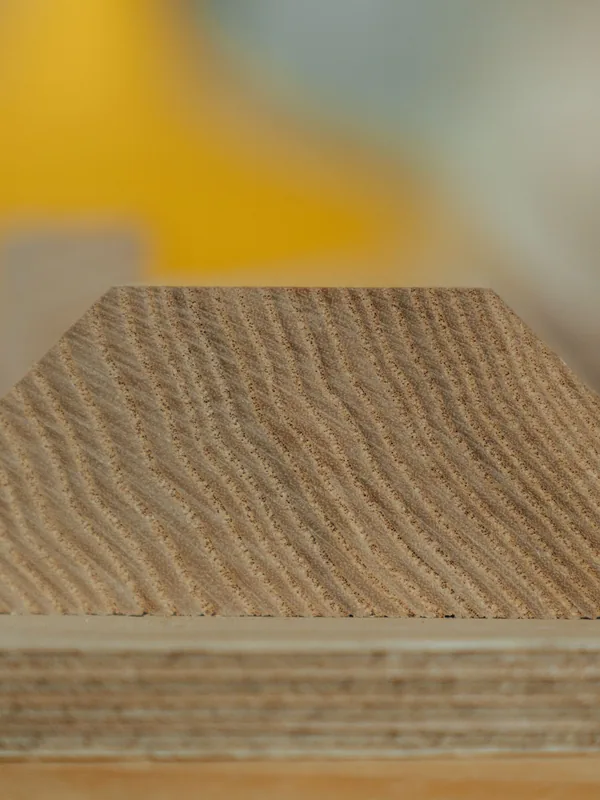
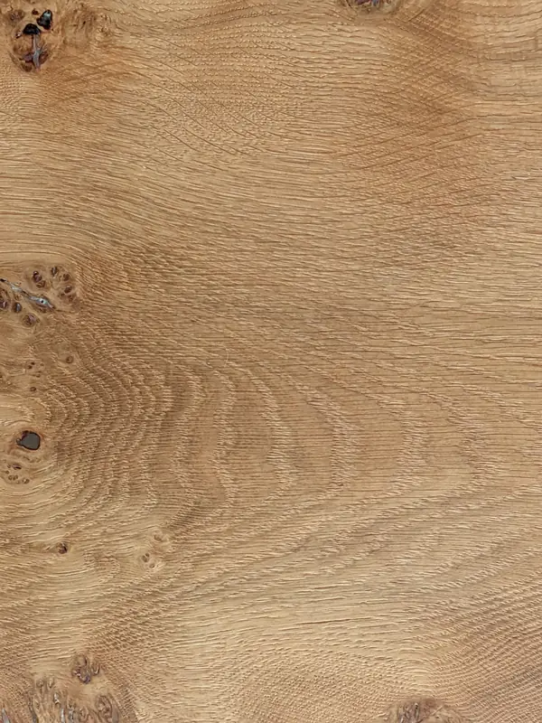
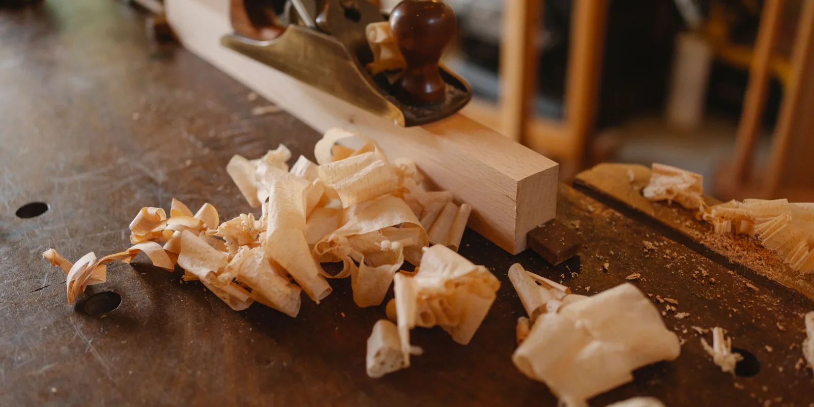
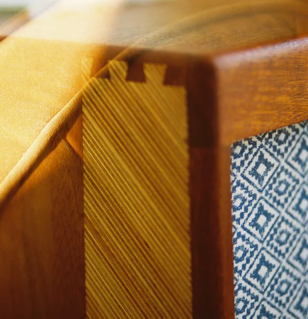

Laminát
550 až 850 € za meterNajlepšie znáša škrabance a vodu, umyjete ho handrou. Drevo len napodobňuje a poškodené miesto sa nedá prebrúsiť.
Ukážka webu od ARLing, vymyslená prevádzka. Stolárstvo Rybina neexistuje, mená, adresa a čísla sú vymyslené.
Web v tomto štýle od 330 € · Chcem taký Späť na ukážkyZvolen a okolie
do 40 km
Malá dielňa vo Zvolene. Zameriame zadarmo, vyrobíme za 6 až 9 týždňov a namontujeme sami.

Dubová dýha s hrčami, tvrdý voskový olej
Úchytka z čiernej ocele, plný výsuv a tiché dovieranie
Pracovná doska v dekore betónu
Štyri z nich. Ďalšie vám ukážeme pri zameraní a vzorky dvierok si ohmatáte v dielni.




Posuňte dĺžku linky a vyberte materiál. Záväznú cenu pošleme do 5 pracovných dní po zameraní.
Merajte po stene. Rohovú linku spočítajte po oboch stenách.
Linka 3,5 m, laminát, orientačne 1 925 až 2 975 €
V cene: korpusy, dvierka, kovanie s tichým dovieraním, laminátová pracovná doska, doprava do 40 km a montáž. Bez: spotrebičov, drezu a dosky z kameňa.
Zameranie je do 40 km od Zvolena zadarmo a k ničomu vás nezaväzuje.
Ceny sú s DPH. Záloha 50 % pri objednávke, zvyšok po montáži.
Termín montáže dostanete písomne hneď po objednávke.
Zmeriame miestnosť, prípojky aj krivé steny a prejdeme, čo od kuchyne čakáte. Do 40 km od Zvolena zadarmo.
Pošleme výkres s rozmermi a záväznú cenu. Úpravy návrhu sú v cene.
Po zálohe objednáme materiál a vyrábame v našej dielni. Rozpracovanú kuchyňu si môžete prísť pozrieť.
Montujeme sami. Zapojíme drez a spotrebiče, doladíme dvierka a odvezieme odpad.
Každý má svoje miesto. Ceny sú za bežný meter kuchyne vrátane montáže.

Najlepšie znáša škrabance a vodu, umyjete ho handrou. Drevo len napodobňuje a poškodené miesto sa nedá prebrúsiť.

Tenká vrstva pravého dreva na stabilnej doske. Vyzerá ako masív a nekrúti sa. Olej treba po rokoch obnoviť.

Dub, jaseň alebo orech v celej hrúbke. Dá sa opakovane brúsiť a vydrží desaťročia. Reaguje na vlhkosť, preto robíme rámové dvierka.

Vyrábame vo Zvolene od roku 2009. Vlado kreslí a zameriava, Maroš reže a lepí, Šimon montuje. Vlado, ktorý vám kuchyňu navrhne, príde aj na montáž.
Zásuvky z masívu spájame na rybinu. Podľa nej sa voláme.

Pri objednávke 50 %, z nej kupujeme materiál. Zvyšok platíte až po montáži, keď si všetko spolu prejdeme.
5 rokov na korpusy a kovanie, 2 roky na povrchovú úpravu. Dvierka vám po prvej zime prídeme doladiť zadarmo.
Áno. Stačí výkres alebo vizualizácia. Rozmery si overíme vlastným zameraním a cenu pošleme do 5 pracovných dní.
Spotrebiče si môžete kúpiť sami alebo cez nás, zabudujeme ich v cene montáže. Kameň objednávame u kamenára a jeho cenu uvedieme zvlášť.
Vymeníme dvierka, pánty, výsuvy aj pracovnú dosku. Pošlite fotku a povieme vám, či sa oprava oplatí.
Zadarmo zameriavame do 40 km od Zvolena: Banská Bystrica, Sliač, Detva, Krupina, Žiar nad Hronom. Ďalej účtujeme 0,50 € za kilometer.
Vymyslené číslo, v ukážke sa nič nevytáča.
Rybinová 5
960 01 Zvolen
dielna@stolarstvo-rybina.example
| Pondelok až piatok | 7:00 až 15:30 |
|---|---|
| Sobota | zamerania po dohode |
| Nedeľa | zatvorené |
Na vašom webe toto tlačidlo otvorí krátky dopyt (meno, telefón, obec, čo chcete vyrobiť) alebo rovno vytočí vaše číslo.
Toto je ukážka, nič sa neodošle. Web v tomto štýle stojí od 330 €. Kalkulačka ceny a body na fotke sú funkcie na mieru: naceníme ich podľa sadzby 40 € za hodinu a odhad pošleme ešte pred objednávkou.
Chcem taký web0XX XXX XXX
Na vašom webe toto tlačidlo rovno vytočí vaše číslo, jedným ťukom z mobilu.
Číslo je vymyslené, v ukážke sa nič nevytáča.
Na vašom webe toto tlačidlo otvorí novú správu s predmetom „Dopyt s fotkou miestnosti“, do ktorej zákazník priloží fotku.
Toto je ukážka, adresa je vymyslená a nič sa neodošle.